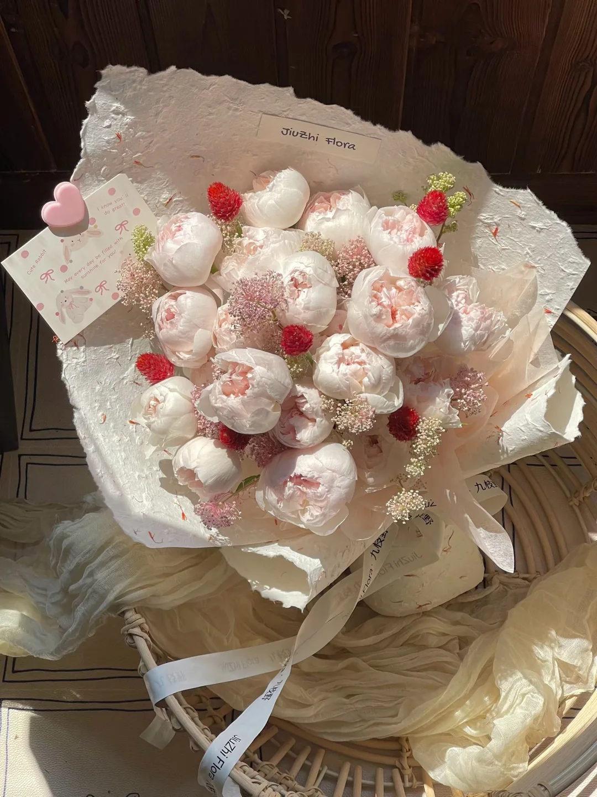
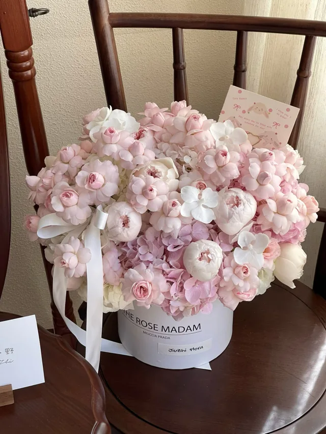
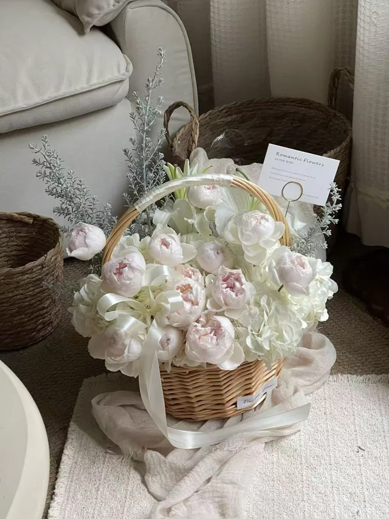
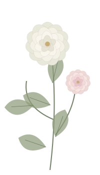
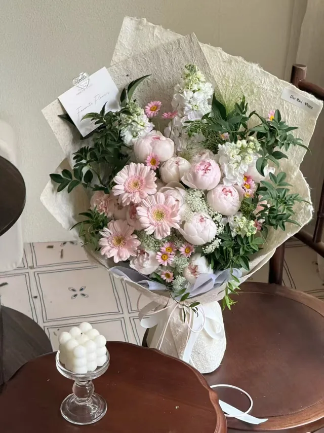
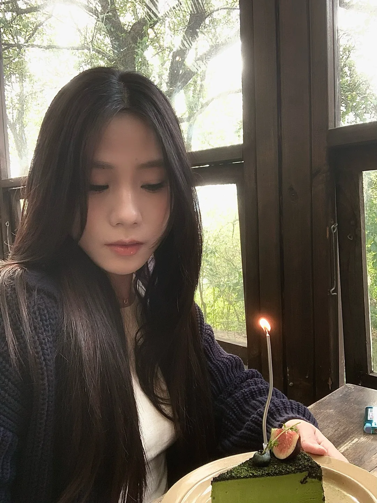

A LITTLE LETTER FOR YOU只寄给你
把今天，留给你老婆，今天
老婆，今天
有一封信给你。
还有一些花，和一些平时没说完的话。
一些温柔，正在等你拆开01 — ∞
01 / FLOWERS FOR YOU
今天的花，
都送给你。
挑了很久的颜色，
最后还是想把这一份柔软送给你。



02 / A FEW WORDS, JUST FOR YOU
想对你说的话，
其实很简单。
老婆，生日快乐。
今天想郑重地告诉你：
能和你一起生活，是一件让我很开心的事。
我喜欢你认真对待生活的样子，
也想接住你偶尔的小情绪。
你可以有自己的节奏，
可以慢一点，也可以任性一点。
希望在我这里，
你总能放心地做你自己。

03 / MAKE A LITTLE WISH

新的一岁愿你自在，
愿你自在，
也被偏爱。
愿你喜欢的事，有时间去做。
想去的地方，有机会抵达。
更愿你每次回头，都知道有人在。
现在，把时间留给你。
闭上眼睛，许一个只属于自己的愿望吧。
THE LOVELIEST PART IS YOU
花开得很好。
但今天，你才是主角。
